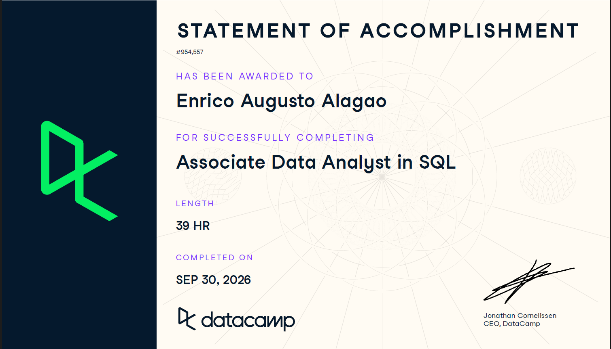

Application volume
Monthly application counts and trailing 3-month average.
Data Professional | Analytics, BI & Data Engineering
I turn raw data into dashboards, reports, KPI tracking, and decisions for non-technical stakeholders. My core stack includes SQL, Python, Apache Superset, Databricks, and Snowflake for analysis, validation, and reporting.
[TODO: availability line, e.g. “Available from YYYY-MM-DD”]
About me
I work with SQL and Python alongside Superset, Databricks, and Snowflake. I turn data into clear decisions for non-technical stakeholders through analysis, dashboards, and reporting. I am especially interested in lending, operations, and environmental analytics. I am looking for data analyst, business analyst, reporting, and dashboard roles.
Work Project / Lending Analytics
This project reviews application outcomes and monthly demand using aggregate data. No borrower-level or group-identifying detail is published.
The earlier portfolio summary reports 18,782 clear outcomes and 91.3% approval. The exploratory modeling brief reports a separate 10,993-application subset (9,973 approved, 1,020 cancelled; 90.7%). Current local source files produce a different population; these figures are attributed to their original analysis versions and should not be combined.
Loading aggregate source summary…
Client name and data anonymized for confidentiality.
Monthly demand and outcome review
Monthly application counts, clear outcomes, and approval rate. Partial edge months are flagged; missing periods are shown as gaps rather than zero activity.
Applications count distinct application IDs. Approval rate = approved ÷ (approved + cancelled); unknown and ambiguous outcomes are reported separately. Period change compares adjacent, non-partial months.
Monthly application counts and trailing 3-month average.
Outcome counts use the same application population and period.
Approved ÷ (approved + cancelled); unknown and ambiguous outcomes are excluded.
Loading calculated highlights…
Higher monthly volume may affect review capacity, while the approval rate measures a different part of the workflow. These are separate signals, not evidence of cause.
Compare higher-volume periods with queue age and processing time before attributing changes to staffing, policy, or customer behavior. Those drivers are not present in this aggregate extract.
| Month | Applications | Approved | Cancelled | Unknown / pending | Approval rate | 3-month average | Change | Coverage |
|---|---|---|---|---|---|---|---|---|
| Loading aggregate data… | ||||||||
Trans Date, parsed strictly as m/d/yyyy. Loading date validation…Exploratory classification
Results below are the exact values supplied for a separate modeling subset. They have not been reproduced from the current local extract because the populations do not match.
Modeling subset: 10,993 applications with clear outcomes (9,973 approved, 1,020 cancelled; 90.7% approved). Target: approved (1) vs cancelled (0). Stratified 80/20 train/test split with random_state=42.
The majority baseline has the highest raw accuracy because approved cases dominate the subset, so accuracy alone is misleading. Macro-F1 weights both classes equally; models are compared by macro-F1 and ROC-AUC. Extra Trees ranked highest on both supplied measures (0.558 and 0.674). ROC-AUC around 0.67 suggests limited separation from application-time fields. Workflow or customer factors could contribute to cancellations, but that is a hypothesis to test, not a conclusion.
| Model | Accuracy | Precision (approved) | Recall (approved) | F1 (approved) | Macro-F1 | ROC-AUC |
|---|---|---|---|---|---|---|
| Loading model results… | ||||||
Numeric application-time features: loan amount, monthly, rebate, gross loan, total interest, old account, total deductions, net amount, term, interest rate, pension amount, age at application (clipped to 18–100), number of months, and dependents. Categorical features: loan type, branch, gender, civil status, pension code, purpose, employer, bank code, withdraw-all flag, and residence certificate. Group-level names and values are not displayed.
Numeric preprocessing: median imputation and standard scaling. Categorical preprocessing: most-frequent imputation and one-hot encoding. Class weighting was used for imbalance. Decision and workflow fields, approval status, and remarks were excluded to avoid target leakage.
Compared models: majority baseline, Logistic Regression, Random Forest, Extra Trees, and XGBoost. Limitations: one split, no tuning or cross-validation, no probability calibration, and approximately 1,020 minority-class examples. Do not use these results to make lending decisions.
Client name and data anonymized for confidentiality.
Work Samples
Work Sample / Environmental Analytics
Problem: environmental records need a path from geographic patterns to detailed review. The dashboard connects map context, ranked categories, activity timing, and record review. Recommendation: use aggregate views to prioritize follow-up, then validate underlying records before taking action.
Key takeaway: aggregate patterns help prioritize review; validate record details before acting.
Client name and data anonymized for confidentiality.
Operations Analytics
Problem: station utilization and operational flow need to support staffing decisions. Finding: the top-utilized station is the strongest capacity signal at 10 hours and 37 minutes. Recommendation: monitor peak periods and consider rebalancing support work around high-use stations.
Key takeaway: use utilization alongside peak-period context when reviewing operational coverage.
Client name and data anonymized for confidentiality.
Executive Reporting
The summary brings together the top-utilized station, busiest day, peak period, and daily flow behavior. This gives managers a concise view of where activity is concentrated and which periods may need closer review.
Key takeaway: combine the utilization, busiest-day, and peak-period views before deciding where to intervene.
Client name and data anonymized for confidentiality.
Portfolio screenshots
These original screenshots are included as supplied. Some may show organization branding or record-level details; review them before sharing the site publicly.
Environmental Records Dashboard Breakdown
Aggregate views support exploration; individual records require validation before use. Client name and data anonymized for confidentiality.
Map views provide location context for aggregate record patterns.
Key takeaway: use geographic patterns to guide follow-up, not to infer causes.
Ranked views help compare aggregate categories while keeping identifying labels out of the portfolio.
Key takeaway: validate category definitions before prioritizing work.
Category and time-based views show how activity is distributed across the reporting period.
Key takeaway: compare distribution and timing together.
Detailed screenshots are withheld until coordinates, species or site names, and contributor names can be redacted.
Key takeaway: protect record-level details during public reporting.
Practice projects using public datasets
These practice samples frame market and sales data through KPIs, trends, category mix, ranking tables, filters, and supporting narrative.
Revenue and product mix show how sales are distributed across the reporting period.
Key takeaway: use quarterly views to compare revenue mix and order-status patterns.
Platform, genre, publisher, and regional views compare public market data at an aggregate level.
Key takeaway: compare market concentration across category and region views.
Heatmaps, treemaps, time trends, and detail tables support category comparison and follow-up analysis.
Key takeaway: move from summary patterns to a targeted, privacy-safe follow-up question.
Technical Profile
Used in: Loan Approval Modeling and EDA; Environmental Records Analytics.
Used in: Loan Application Trend Analysis; Environmental Records Analytics.
Used in: Environmental Records Analytics; Station Performance Dashboard; public-dataset practice projects.
Certifications

DataCamp · [TODO: date] · Verification: [TODO: verification URL]
Pierian Data training · [TODO: date] · Verification: [TODO: verification URL]
[TODO: degree, school, years]
Experience
Validated and encoded information while maintaining data integrity and confidentiality.
Contact
Email: enricoalagao@gmail.com